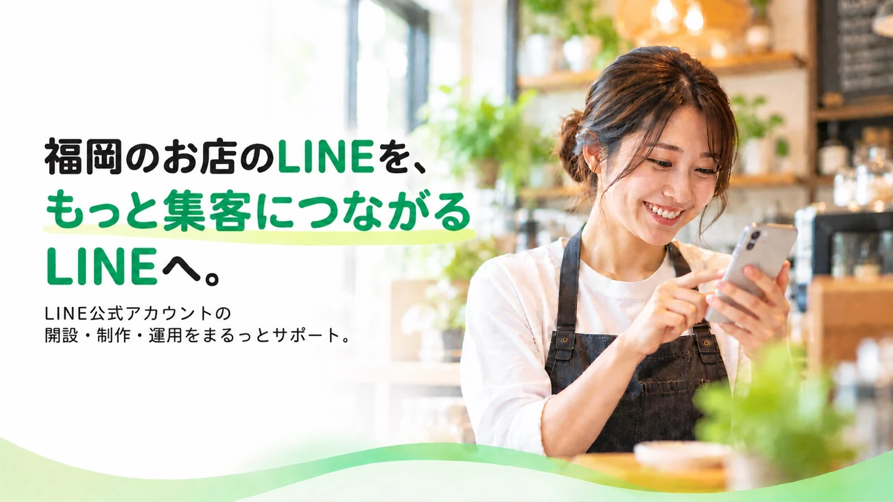

何から始めれば
いいか分からない。
アカウントの開設、プロフィール、あいさつメッセージ。使い始めるための準備をお手伝いします。
初期構築 9,800円〜福岡のお店の、LINE相談室。
開設も、デザインも、日々の配信も。
お店に合ったLINE公式アカウントを、
必要なところから一緒につくります。
相談だけでもOK。制作のみのご依頼も。

写真はイメージです。掲載人物は担当者ではありません。
こんなとき、頼ってください。
まだLINEがなくても、
今あるLINEを活かしたい方も。
アカウントの開設、プロフィール、あいさつメッセージ。使い始めるための準備をお手伝いします。
初期構築 9,800円〜リッチメニューやクーポン、ショップカード。お客さまが使いやすい入口を一緒に考えます。
デザインサンプルを見る配信内容の相談から運用の見直しまで。お店のペースに合わせて続ける工夫をサポートします。
月額サポート 4,980円〜ばってんLaboの制作サンプル
お店らしさと、使いやすさ。
どちらも大切にデザインします。
01 飲食店のデザイン
あたたかい色と写真で、お店の空気感を。メニュー・クーポン・ショップカードをまとめ、次の来店につながる入口をつくります。
架空店舗のデザインサンプル
02 美容室・サロンのデザイン
やわらかなベージュと余白で、落ち着いた印象に。予約・メニュー・アクセスの入口を揃え、お客さまが探す手間を減らします。
架空店舗のデザインサンプル
03 小売店のデザイン
商品の写真が映えるシンプルなデザイン。新入荷の案内から商品ページやお問い合わせへ、気になる気持ちをつなぎます。
架空店舗のデザインサンプル
すべて架空店舗のデザインサンプルで、制作実績ではありません。画面はイメージで、実際のLINEの表示とは異なります。掲載機能・点数・制作範囲はお見積もり時に確認します。
LINE公式でできること
お店に必要な機能を選んで。
全部を一度に始めなくても大丈夫。
季節の商品やキャンペーンを、友だちになったお客さまへ届けます。
トーク画面の下に、予約ページやメニューへの入口をまとめます。
来店や購入のポイントをLINE上で管理。通う楽しみをつくります。
予約管理は外部サービスを利用します。LINE公式アカウントの機能を詳しく見る（別タブ）
料金の目安
月額契約は必須ではありません。
初期構築だけでもご依頼いただけます。
初期構築
まず、使い始める準備を。
9,800円（税込）
基本設定・あいさつ・簡易リッチメニュー
内容を見るおすすめの初期構築
お店への入口を、しっかり。
19,800円（税込）
クーポン・ショップカード・予約導線など
内容を見る初期構築
配信の準備まで、まとめて。
29,800円（税込）
初回配信・店頭QR POP・運用方法の説明など
内容を見る月額サポート 4,980円〜（税込）
LINE公式アカウントや外部サービスの利用料は別です。制作内容・点数・修正範囲はお見積もり時にご案内します。
福岡のお店と、
お客さまをつなぐ。
ばってんLaboについて
福岡のお店・小規模事業者向けに、LINE公式アカウントの制作と運用を支援しています。大切にしているのは、お店に合った使い方を一緒に考えること。
「何を配信しよう？」「今のメニューを見直したい」。そんな日々の相談も、必要なサポートを選んでご依頼いただけます。
相談から公開まで
内容と費用にご納得いただいてから。
相談だけで契約になることはありません。
業種・LINEの有無・今のお悩みをお聞かせください。
制作範囲、納期、修正範囲、お見積もりをご案内します。
必要な素材を伺い、お店に合わせて制作・設定を進めます。
画面と動作をご確認いただいてから利用開始。運用支援はご希望に応じて。
よくある質問
はい。開設から初期設定までご相談いただけます。使い方を考えるところからお手伝いします。
はい。初期構築だけのご依頼も可能です。月額の運用サポートは、ご希望に応じてお選びいただけます。
はい。既存アカウントの見直しや、リッチメニューのみの制作もご相談いただけます。
必要な機能や素材の準備状況を伺い、制作期間・点数・修正範囲をお見積もり時にご案内します。ご希望の公開時期があれば、最初にお知らせください。
まずは業種と、今のLINEの有無、困っていることをお知らせください。写真・ロゴ・メニュー表など、制作に必要な素材は内容に合わせてご案内します。
はい。運用方法の説明を含む初期構築プランや、月額の運用サポートをご用意しています。ご希望の範囲を伺い、ご案内します。
まずは、お店のお話から。
まだ依頼するか決めていなくても大丈夫。
最初は、この3つを教えてください。
友だち追加後に、メッセージをお送りください。相談だけでもOKです。